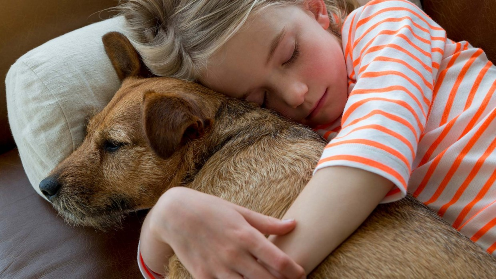

The adoption process is very quick and painless at the AWS. You will need to have made contact with someone in the adoption arena.
You will have to bring a picture of the dog/cat, you would like to adopt, that has been advertised as up for adoption.
We require you to fill out a short application form, which will be processed and returned with acceptance or rejection, whereby you will know weather you may adopt the animal.
Lastly, if your application has been accepted, you will be introduced to the newest member of your family!
Lost and Found
What to do if you have lost your pet
Report that your pet is missing to as many organizations as possible
Contact those in your neighborhood and set up a search team
If more than 2 days have passed, visit lost and found animal shelters to see if somebody hasn't perhaps taken your pet to one
Lastly, do not give up looking, keep the hopes up and carry on searching!

What to do if you have found someone else's pet
Take and send a picture of the animal to as many animal rescue groups as possible
Inform your neighborhood chat groups
If time has passed and you still have not found the owners, you may bring the animal in to the AWS
Abuse and Neglect
We stand firmly against animal abuse and neglect and would love to put a stop to as many cases of it as possible.
How can you play your part against animal abuse and neglect?
Try to intervene by telling them that what they are doing is wrong
If it continues, try to get/find their personal details and send a report through to the AWS
The AWS will retrieve the animal/s and the reporters details will be kept in private
Costs
Table of Costs
Animal
Adoption
Collars/Tags
Micro-Chipping
Vaccinations
Sterilization
Dogs
R900
R50
R400
R200
R300
Cats
R500
R50
R400
R200
R300
Additional Costs
R300 to retrieve your pet from the lost and found group
Any form of donation is accepted
Sponsor a kennel for as little as R1200
We offer food packages for all types of animals (prices fluctuate)